Back to top
Retina and Lateral Geniculate Nucleus (LGN)
Most of the Retinal Ganglion Cells and cells in the LGN can be modelled with center-surround receptive fields with monophasic or biphasic temporal response. VistaLab comes with a configurable implemenation of such receptive fields according to the general expressions in [Cai, Freeman, DeAngelis, J. Neurophysiol. 97]. Using these units it is easy to generate artificial retinas with arbitrary sampling [Martinez-Garcia et al. 16, Martinez-Garcia et al. 17].
The examples below show (a) the receptive field of a representative neuron in the spatiotemporal and in the 3D Fourier domain, and (b) the response of a population of such neurons to a natural movie assuming uniform retinal sampling and spatial invariance of the receptive field. VistaLab allows explicit implementation of each sensor response using the scalar product by the corresponding receptive field to get rid of the uniform sampling and the convolution assumptions.
Pulsating on-center LGN neuron: Receptive field (or impulse response) in the spatiotemporal domain, where white stands for excitation and black stands for inhibition.
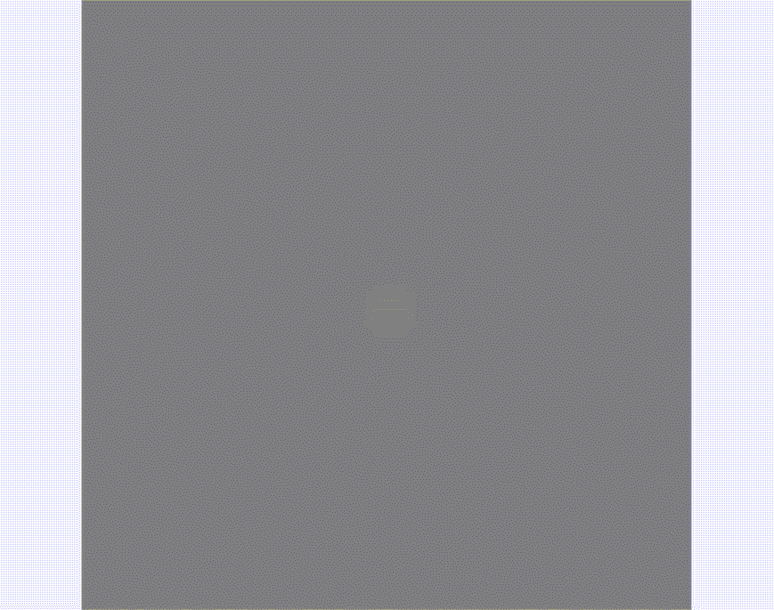Temporal variation of spatial response: Center-surround excitation at the stimulus onset is followed by reversed sign response when stimulation vanishes.
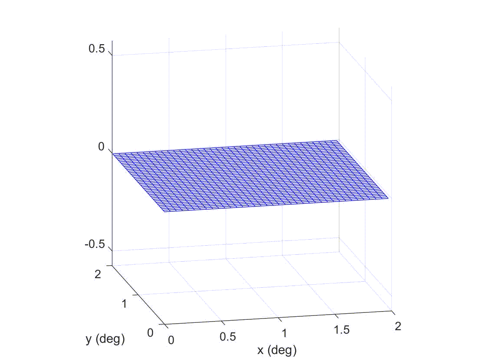Frequency selectivity: Band pass of this kind of neurons in the spatio-temporal Fourier domain. This is the Fourier transform of the receptive field at the left.
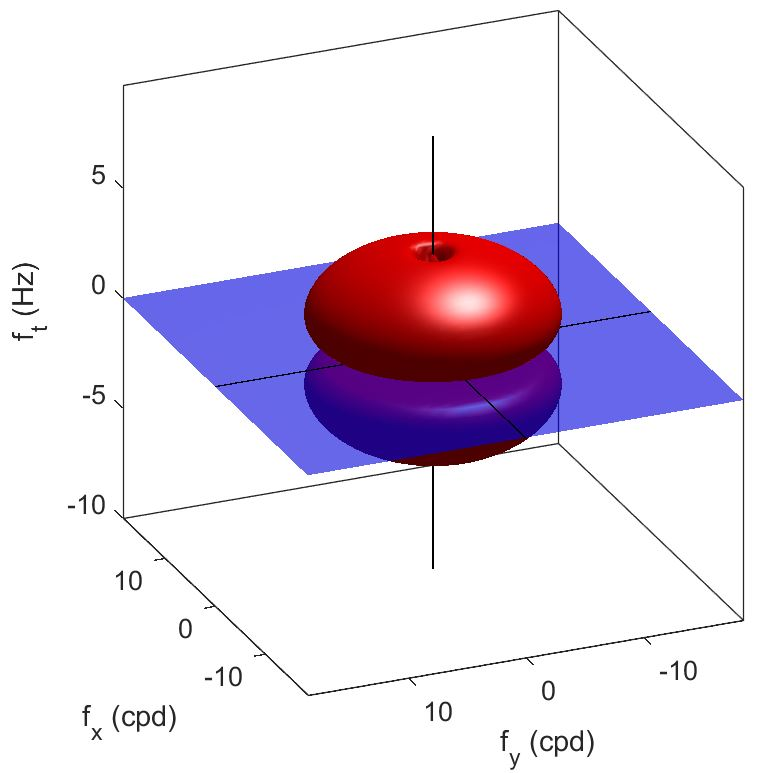See Vistalab CODE to develop these examples demo_cells.m
Response of some LGN population to a natural stimulus: Assuming a spatially invariant population of LGN cells like the one depicted above uniformly covering the visual field, we can compute the response to a natural movie using plain convolution or product in the Fourier domain.

Spectrum of the original sequence: each branch of the X represents an object moving with constant speed (i.e. comes from one of the waving hands)
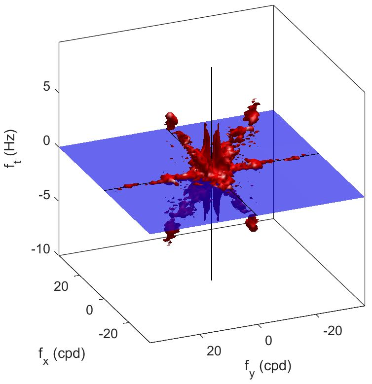Spectrum of the response: response was computed in the Fourier domain as the aplication of the band-pass filter function of this specific LGN population to the original spectrum.
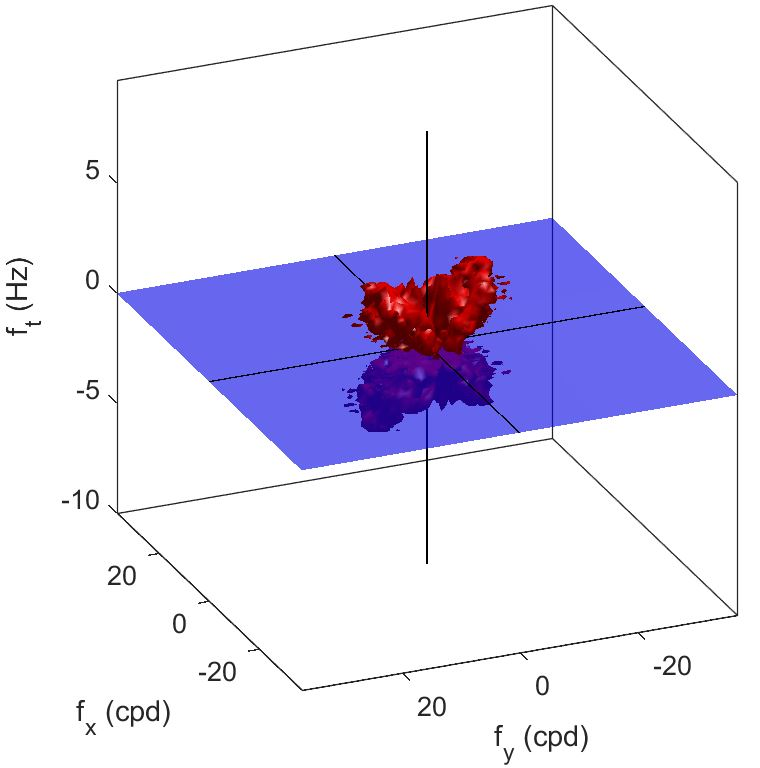Back to top
Primary Visual Cortex (V1)
Simple cells in the V1 cortex can be modelled with Gabor-like receptive fields tuned to certain spatial and temporal frequencies. VistaLab comes with a configurable implemenation of such receptive fields according to the general expressions in [Daugman JOSA A 89, Simoncelli & Heeger Vis. Res. 98]. Using these units it is easy to generate artificial cortex with arbitrary sampling [Martinez-Garcia et al. 17].
The examples below show six representative neurons tuned to the same spatial frequencies (7 cpd) but different temporal frequencies 2, 7, and 10 Hz, both positive and negative.
Eventhough there is no conclusive tuning to two-dimensional speed due to the aperture problem [Heeger JOSA 87], in the direction perpendicular to the grating, these are tuned to 0.3, 1 and 1.5 degrees/sec respectively (both positive and negative).
Figures show: (a) the receptive fields in the spatiotemporal and in the 3D Fourier domain, and (b) the response of a population of such neurons to a natural movie assuming uniform retinal sampling and spatial invariance of the receptive field. VistaLab allows explicit implementation of each sensor response using the scalar product by the corresponding receptive field to get rid of the uniform sampling and the convolution assumptions.
Pulsating V1 neurons: Receptive fields (or impulse response) in the spatiotemporal domain, where white stands for excitation and black stands for inhibition. In this figure there are 2*3 replications of a 1 degree visual field. Each replication shows the receptive field of a neuron tuned to the (same) central location but different spatio-temporal frequency.

See Vistalab CODE to develop these examples demo_cells.m
Temporal variation of spatial responses: In a surface of sensors of the corresponding kind, Gabor-like excitation/inhibition at the stimulus onset turns into travelling a wave that vanishes afterwards.

Frequency selectivity: Band pass of the six considered neurons. This is the Fourier transform of the receptive fields shown above.
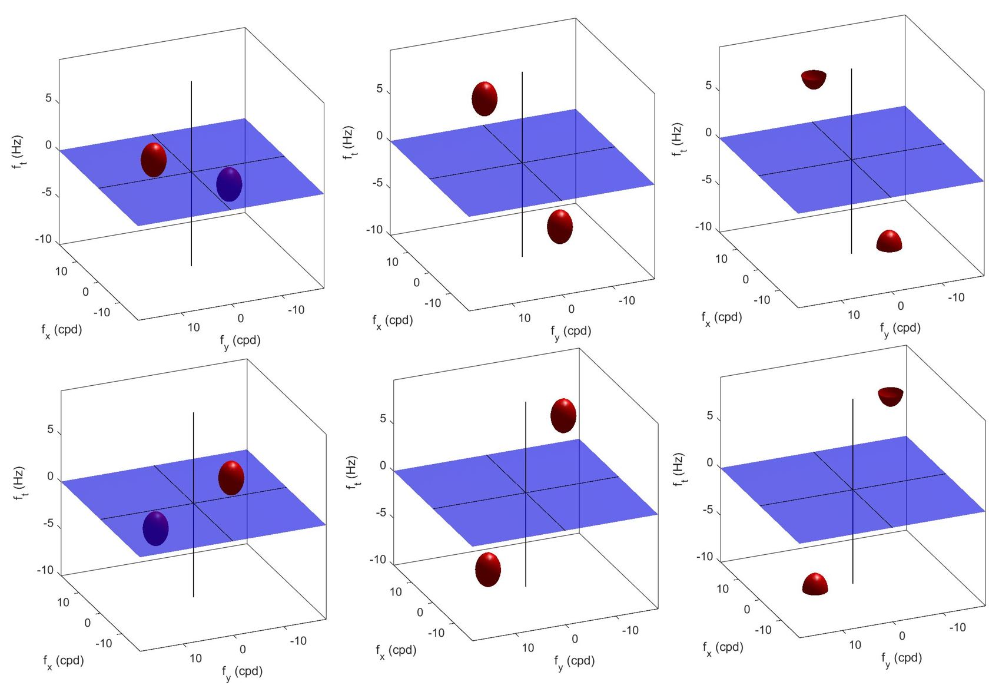Response of the six V1 populations to a natural stimulus: Assuming a spatially invariant populations of V1 cells like the ones depicted above uniformly covering the visual field, we can compute their responses to a natural movie using plain convolution or product in the Fourier domain. In the figure we show the original stimulus and the six corresponding sets of responses. Note how the different populations respond to qualitatively different features of the stimulus (hand going up/down, static objects of the right frequency), and note how the cells tuned to too high speed do not respond.
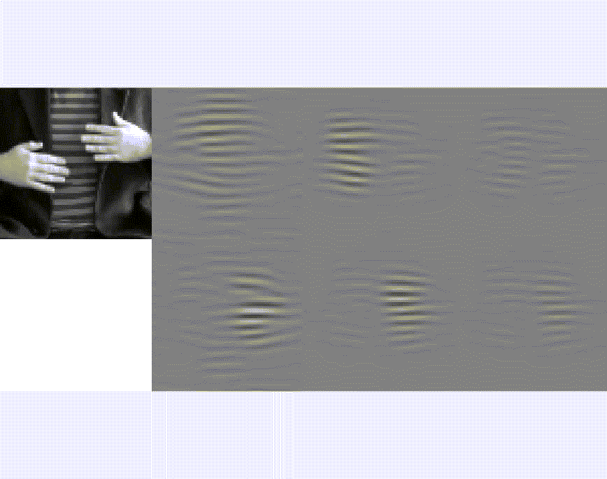Back to top
Middle Temporal (MT) region
Cells in the MT cortex receive projections from V1 cells aligned in a plane in the spatio-temporal Fourier domain. Therefore, they are narrow-band in speed tuning. VistaLab comes with a configurable implemenation of such receptive fields according to the general expressions in [Simoncelli & Heeger Vis. Res. 98]. Using these units and a spatio-temporal window it is easy to generate artificial MT cortex with arbitrary sampling [Martinez-Garcia et al. 17].
The examples below shows six representative sets of neurons tuned to tuned to speeds of 0.3, 1 and 1.5 degrees/sec respectively (both positive and negative).
In this case while
Figures show: (a) the receptive fields in 3D Fourier domain, the kind of features these cells are optimally tuned to, and (b) the response of a population of such neurons to a natural movie assuming uniform retinal sampling and spatial invariance of the receptive field. VistaLab allows explicit implementation of each sensor response using the scalar product by the corresponding receptive field to get rid of the uniform sampling and the convolution assumptions.
Frequency selectivity in MT: Band pass of the six considered kinds of neurons. These are the sum of narrow-band V1-like filters shown above. Only filters aligned according to well-defined speed planes are combined in each MT cell.
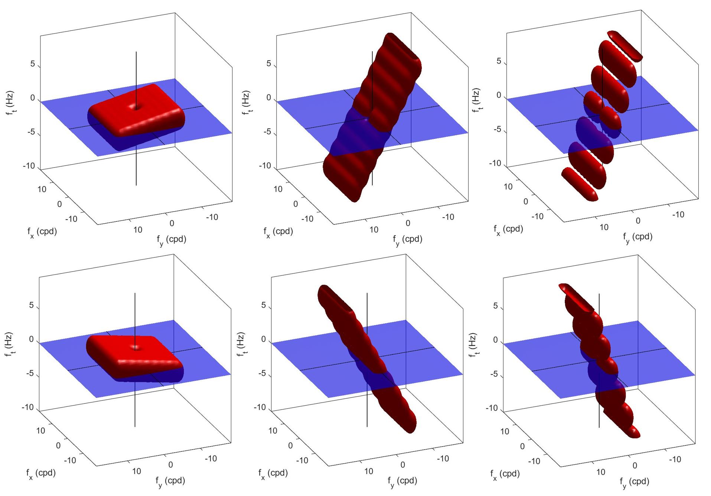Optimal patterns for MT neurons: These patterns were computed by injecting noise only in the band where the different cells are sensitive. Each replication shows the corresponding pattern (showing no specific spatial frequency content) but a markedly different speed.

See Vistalab CODE to develop these examples demo_cells.m
Temporal variation of spatial responses: In surfaces of sensors of the considered kinds, the patterns at the left lead to noisy travelling waves.

Response of the six MT populations to a natural stimulus: Assuming a spatially invariant populations of MT cells like the ones depicted above uniformly covering the visual field, we can compute their responses to a natural movie using plain convolution or product in the Fourier domain. In the figure we show the original stimulus and the six corresponding sets of responses (where white means excitation, black means inhibition, and gray means spontaneous/basal response). Note how the different populations respond to qualitatively different features of the stimulus (hand going up/down, static objects of the right frequency), and note how the cells tuned to too high speed do not respond.

Back to top
Spatio-temporal Contrast Sensitivities
VistaLab comes with different Contrast Sensitivity Functions (CSFs): (a) the spatial-achromatic CSF from the OSA Standard Spatial Observer [Watson & Malo IEEE ICIP 02], (b) the spatial-chromatic, Red-Green and Yellow-Blue CSFs of K. Mullen [Vis. Res. 85], with approrpiate scaling [Gutierrez et al. 12], and (c) the achromatic spatio-temporal CSFs of D. Kelly [JOSA 79], and S. Daly (with object tracking speed compensation) [SPIE 98].
|
Spatial-only Achromatic and Chromatic CSFs: The achromatic CSF of the Standard Spatial Observer includes the oblique effect. The chromatic CSFs are assumed to be isotropic. | |
| 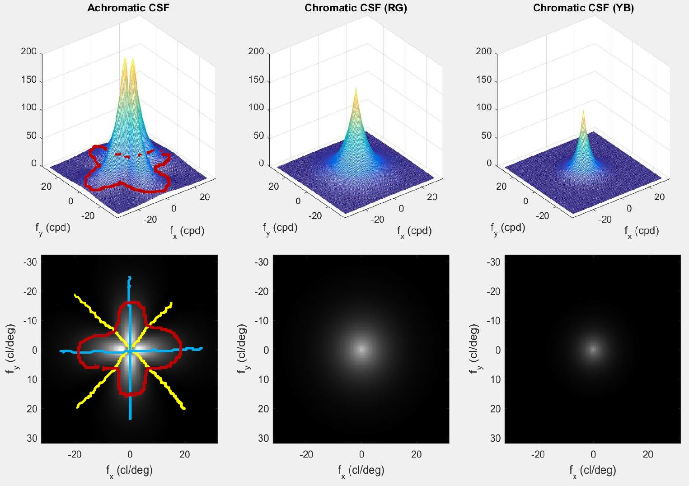 |
|
Spatial-only CSFs on a natural image: VistaLab applied together with COLORLAB allows accurate application of the spatial CSFs. In this example the natural image was first represented in CIE XYZ values. Then, it was transformed to a sensible linear Y, RG, YB representation [Ingling&Tsou, Vis. Res. 79], and then, each CSF was applied to the corresponding chromatic channel. The result was expressed in digital values to be shown in regular diaplays. | |
| 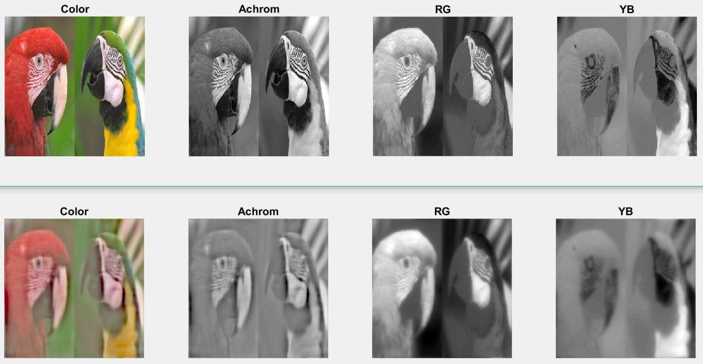 |
|
Spatio-temporal CSF (with saccade compensation):in the motion-compensated case sensitivity to stationary patterns decreases a lot (note the reduction of the CSF at ft=0). Below you can see three different representations of this function. | |
| 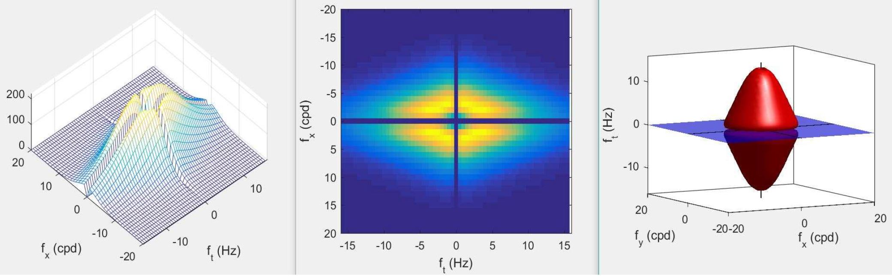 |
|
Natural movie filtered by spatio-temporal CSF. | |
| 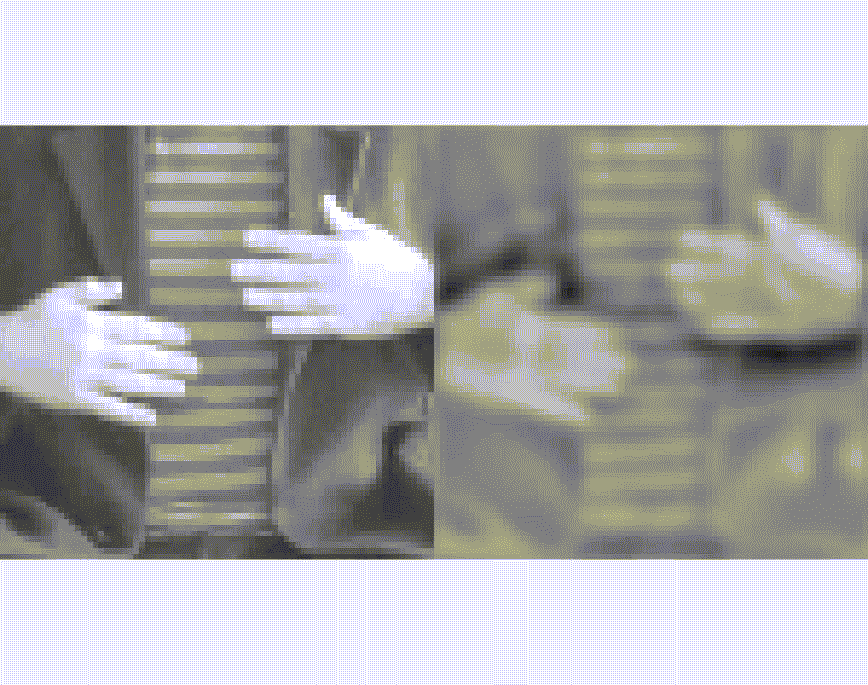 |
Back to top
Controlled spatio-temporal stimuli
The movies below illustrate the abilities of VistaLab for accurate motion control. First row: includes sequences of the motion of a lambertian rigid body evolving in a gravitatory field with inelastic restrictions recorded from different points of view, this example allows arbitrary locations of the illumination and camera. In this case the actual motion in 3D world and the optical flow (motion in the retinal plane) are known. Second row: includes an example of random dots moving according to arbitrary optical flow fields. Third row: shows how static pictures can be animated using spatially uniform flows of arbitrary speed leading to interesting shape-from-motion effects in the case of noise patterns. Fourth row: shows different movies of the same periodic pattern moving at progressively increasing speeds. Aliasing introduces speed reversal at the expected place, as demonstrated by the Fourier diagrams below.

|
|
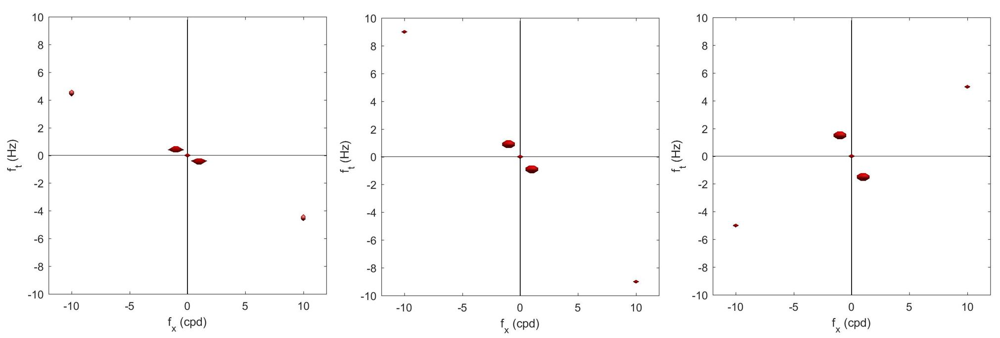
Speed reversal in the Fourier domain: In the periodic pattern sequences all the sinusoidal components were computed to travel to the right with the same speed. However, in the last (high speed) case, the high frequency pattern seems to go backwards. Aliasing suffered by this component in this case is easy to understand in the Fourier domain. According to the optical flow equation in the Fourier domain [Watson & Ahumada, JOSA A 85], when the speed increases (in our case from left to right) so it does the inclination of all the sinusoidal components of the sequence in the fx, ft plane. For low speeds all the components are aligned. However, when the speed is too high, the high frequency components have temporal frequencies over the Nyquist limit. This implies an apparent inclination for those frequencies which is totally oposed to the rest of the components, and hence, speed reversal. NOTE: the spatial extent of the discrete domain is 2 deg, and the frame rate is 20 Hz, the spatial frequency of the high frequency component is 10 cpd, and the actual speed in the last case should be 1.5 deg/sec. |
Back to top
Extensions of VistaLab
VistaLab only addresses the linear part of the neural mechanisms that mediate the preattentive perception of spatio-temporal patterns. However, it doesnt combine these mechanisms to compute motion (optical flow), it doesnt include the nonlinear interactions between the linear mechanisms, and it doesnt include color.
These issues can be addressed with other toolboxes, namely VistaVideoCoding, BioMultiLayer_L_NL_color in VistaModels, and Colorlab.
Perceptually meaningful motion fields
Back to top
Download VistaLab!
- Updated Matlab Toolbox (VistaLab 4.0): Vistalab.zip (30MB)

- Outdated toolbox (VistaLab 1.0): BasicVideoTools_code.zip (15MB)
The first stand alone version of VistaLab was known as BasicVideoTools. This outdated version is included here only for compatibility with the code in the experiments of the motion-aftereffect Front. Human Neurosci. 15 paper. - Extensions of VistaLab I: VistaVideoCoding VistaVideoCoding.zip (60MB)
- Extensions of VistaLab II: VistaModels BioMultiLayer_L_NL_color.zip (40MB)
- Extensions of VistaLab III: COLORLAB Colorlab.zip (15MB)
Back to top
Citation and References
VistaLab is released free of charge for the scientific community: please cite us when using the software (both the web site and first journal paper that used VistaLab)
WEB:
J. Malo & J. Gutierrez.VistaLab: the Matlab toolbox for Spatio-Temporal Vision. Univ. Valencia 1997
https://ipl-uv.github.io/code/visioncolor/vistalab.html
FIRST PAPER:
Malo, Gutiérrez, Epifanio, Ferri,Perceptually weighted optical flow for motion-based segmentation in MPEG-4 paradigm. Electr. Lett. 36 (20):1693-1694 (2000)

Other papers:
V. Laparra & J. Malo.Visual aftereffects and sensory nonlinearities from a single statistical framework Frontiers in Human Neuroscience 9:557 (2015)
|
Optical flow in VistaVideoCoding: this separate toolbox provides different motion estimation algorithms for MPEG-like video coders. We proposed improvements to multiscale flows based on perceptual criteria to increase the resolution of the motion estimate [Malo98, Malo00a, Malo00b, Malo01a, Malo01b]. |